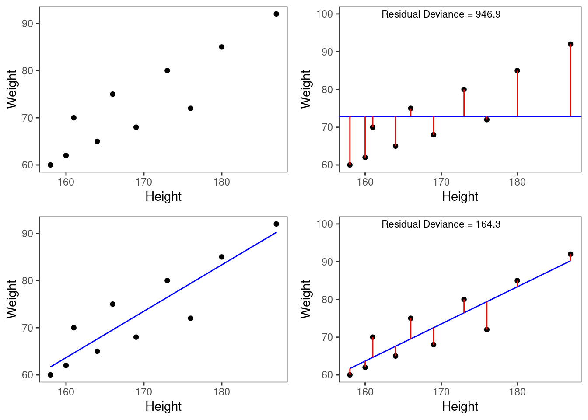
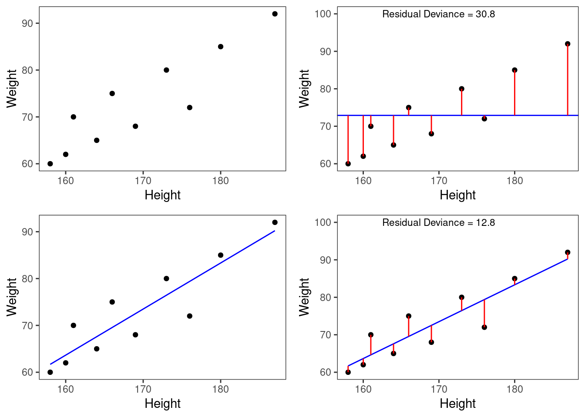
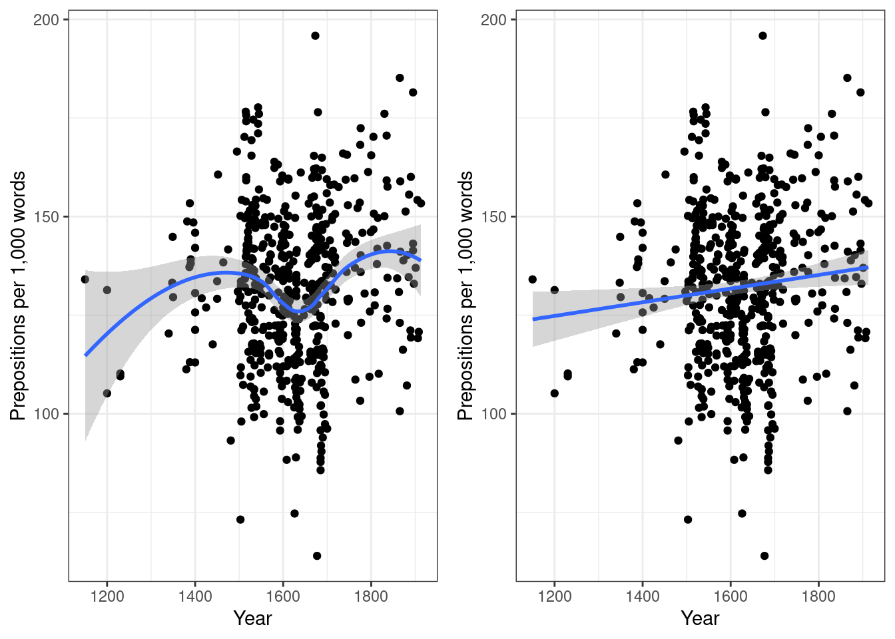
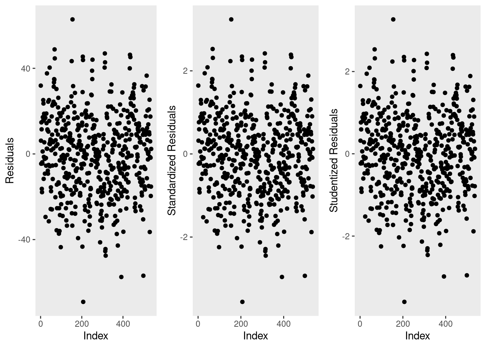
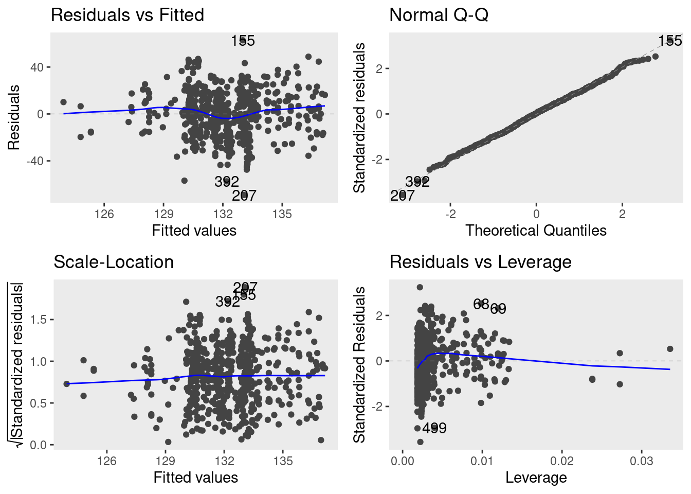
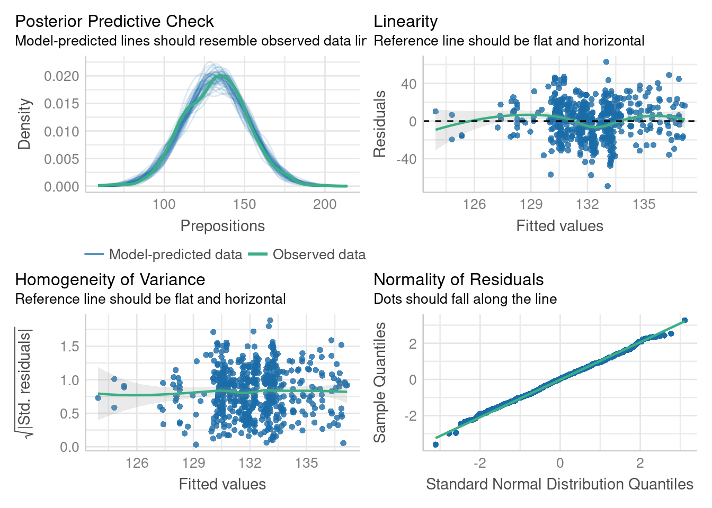
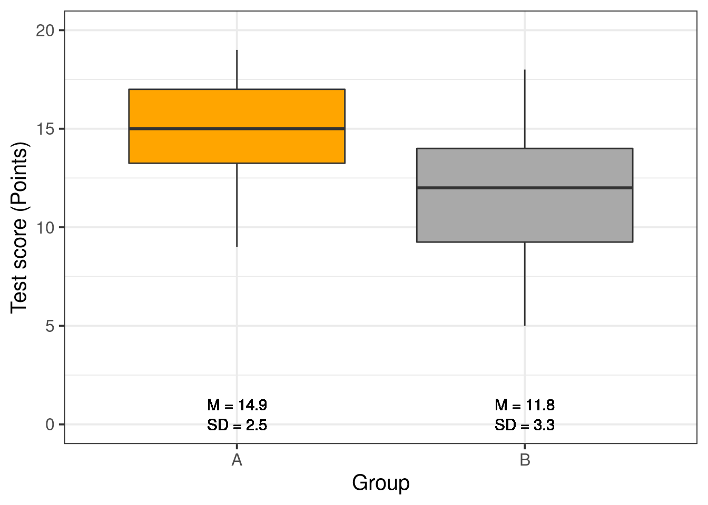
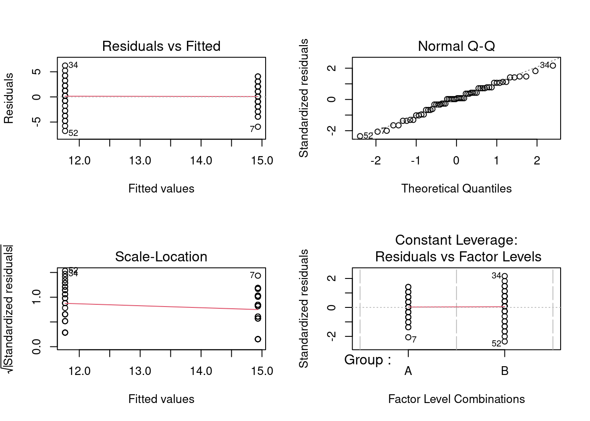

Introduction to Regression Analysis
Martin Schweinberger
2022-09-13

Introduction
This tutorial introduces regression analyses (also called regression modeling) using R.1 Regression models are among the most widely used quantitative methods in the language sciences to assess if and how predictors (variables or interactions between variables) correlate with a certain response.

This tutorial is aimed at intermediate and advanced users of R with the aim of showcasing how to perform regression analysis using R. The aim is not to provide a fully-fledged analysis but rather to show and exemplify common regression types, model diagnostics, and model fitting using R.
The entire R Notebook for the tutorial can be downloaded here. If you want to render the R Notebook on your machine, i.e. knitting the document to html or a pdf, you need to make sure that you have R and RStudio installed and you also need to download the bibliography file and store it in the same folder where you store the Rmd or the Rproj file.
Regression models are so popular because they can
incorporate many predictors in a single model (multivariate: allows to test the impact of one predictor while the impact of (all) other predictors is controlled for)
extremely flexible and and can be fitted to different types of predictors and dependent variables
provide output that can be easily interpreted
conceptually relative simple and not overly complex from a mathematical perspective
R offers various ready-made functions with which implementing different types of regression models is very easy.
The most widely use regression models are
linear regression (dependent variable is numeric, no outliers)
logistic regression (dependent variable is binary)
ordinal regression (dependent variable represents an ordered factor, e.g. Likert items)
multinomial regression (dependent variable is categorical)
The major difference between these types of models is that they take different types of dependent variables: linear regressions take numeric, logistic regressions take nominal variables, ordinal regressions take ordinal variables, and Poisson regressions take dependent variables that reflect counts of (rare) events. Robust regression, in contrast, is a simple multiple linear regression that is able to handle outliers due to a weighing procedure.
If regression models contain a random effect structure which is used to model nestedness or dependence among data points, the regression models are called mixed-effect models. regressions that do not have a random effect component to model nestedness or dependence are referred to as fixed-effect regressions (we will have a closer look at the difference between fixed and random effects below).
There are two basic types of regression models:
fixed-effects regression models
mixed-effects regression models (which are fitted using the
lme4package (Bates et al. 2015) in this tutorial).
Fixed-effects regression models are models that assume a non-hierarchical data structure, i.e. data where data points are not nested or grouped in higher order categories (e.g. students within classes). The first part of this tutorial focuses on fixed-effects regression models while the second part focuses on mixed-effects regression models.
There exists a wealth of literature focusing on regression analysis and the concepts it is based on. For instance, there are Achen (1982), Bortz (2006), Crawley (2005), Faraway (2002), Field, Miles, and Field (2012) (my personal favorite), Gries (2021), Levshina (2015), and Wilcox (2009) to name just a few. Introductions to regression modeling in R are Baayen (2008), Crawley (2012), Gries (2021), or Levshina (2015).
The Basic Principle
The idea behind regression analysis is expressed formally in the equation below where \(f_{(x)}\) is the \(y\)-value we want to predict, \(\alpha\) is the intercept (the point where the regression line crosses the \(y\)-axis), \(\beta\) is the coefficient (the slope of the regression line).
\[\begin{equation} f_{(x)} = \alpha + \beta_{i}x + \epsilon \end{equation}\]
To understand what this means, let us imagine that we have collected information about the how tall people are and what they weigh. Now we want to predict the weight of people of a certain height - let’s say 180cm.
Height | Weight |
173 | 80 |
169 | 68 |
176 | 72 |
166 | 75 |
161 | 70 |
164 | 65 |
160 | 62 |
158 | 60 |
180 | 85 |
187 | 92 |
We can run a simple linear regression on the data and we get the following output:
# model for upper panels
summary(glm(Weight ~ 1, data = df))##
## Call:
## glm(formula = Weight ~ 1, data = df)
##
## Deviance Residuals:
## Min 1Q Median 3Q Max
## -12.90 -7.15 -1.90 5.85 19.10
##
## Coefficients:
## Estimate Std. Error t value Pr(>|t|)
## (Intercept) 72.900 3.244 22.48 3.24e-09 ***
## ---
## Signif. codes: 0 '***' 0.001 '**' 0.01 '*' 0.05 '.' 0.1 ' ' 1
##
## (Dispersion parameter for gaussian family taken to be 105.2111)
##
## Null deviance: 946.9 on 9 degrees of freedom
## Residual deviance: 946.9 on 9 degrees of freedom
## AIC: 77.885
##
## Number of Fisher Scoring iterations: 2To estimate how much some weights who is 180cm tall, we would multiply the coefficient (slope of the line) with 180 (\(x\)) and add the value of the intercept (point where line crosses the \(y\)-axis). If we plug in the numbers from the regression model below, we get
\[\begin{equation} -93.77 + 0.98 ∗ 180 = 83.33 (kg) \end{equation}\]
A person who is 180cm tall is predicted to weigh 83.33kg. Thus, the predictions of the weights are visualized as the red line in the figure below. Such lines are called regression lines. Regression lines are those lines where the sum of the red lines should be minimal. The slope of the regression line is called coefficient and the point where the regression line crosses the y-axis at x = 0 is called the intercept. Other important concepts in regression analysis are variance and residuals. Residuals are the distance between the line and the points (the red lines) and it is also called variance.

Some words about the plots in the figure above: the upper left panel shows the raw observed data (black dots). The upper right panel shows the mean weight (blue line) and the residuals (in red). residuals are the distances from the expected or predicted values to the observed values (in this case the mean is the most most basic model which we use to predict values while the observed values simply represent the actual data points). The lower left panel shows observed values and the regression line, i.e, that line which, when drawn through the data points, will have the lowest sum of residuals. The lower right panel shows the regression line and the residuals, i.e. the distances between the expected or predicted values to the actual observed values (in red). Note that the sum of residuals in the lower right panel is much smaller than the sum of residuals in the upper right panel. This suggest that considering Height is a good idea as it explains a substantive amount of residual error and reduces the sum of residuals (or variance).2
Now that we are familiar with the basic principle of regression modeling - i.e. finding the line through data that has the smallest sum of residuals, we will apply this to a linguistic example.
Preparation and session set up
This tutorial is based on R. If you have not installed R or are new to it, you will find an introduction to and more information how to use R here. For this tutorials, we need to install certain packages from an R library so that the scripts shown below are executed without errors. Before turning to the code below, please install the packages by running the code below this paragraph. If you have already installed the packages mentioned below, then you can skip ahead and ignore this section. To install the necessary packages, simply run the following code - it may take some time (between 1 and 5 minutes to install all of the libraries so you do not need to worry if it takes some time).
# install
#install.packages("car")
install.packages("flextable")
install.packages("ggplot2")
install.packages("ggpubr")
install.packages("ggfortify")
install.packages("see")
install.packages("performance")
install.packages("report")
# install klippy for copy-to-clipboard button in code chunks
install.packages("remotes")
remotes::install_github("rlesur/klippy")Now that we have installed the packages, we activate them as shown below.
# set options
options(stringsAsFactors = F) # no automatic data transformation
options("scipen" = 100, "digits" = 12) # suppress math annotation
# load packages
library(flextable)
library(ggfortify)
library(ggplot2)
library(ggpubr)
library(sjPlot)
library(performance)
library(see)
library(report)
# activate klippy for copy-to-clipboard button
klippy::klippy()Once you have installed R and RStudio and initiated the session by executing the code shown above, you are good to go.
Simple Linear Regression
Simple Linear Regression is the most basic type of regression and it it falls into the class of fixed-effects regression models. Regressions are used when we try to understand how independent variables correlate with a dependent or outcome variable. So, if you want to investigate how a certain factor affects an outcome, then a regression is the way to go. We will have a look at two simple examples to understand what the concepts underlying a regression mean and how a regression works. The R code, that we will use, is adapted from many highly recommendable introductions which also focus on regression (among other types of analyses), for example, Gries (2021), Winter (2019), Levshina (2015), Winter (2019) or Wilcox (2009). Baayen (2008) is also very good but probably not the first book one should read about statistics but it is highly recommendable for advanced learners.
Although the basic logic underlying regressions is identical to the conceptual underpinnings of analysis of variance (ANOVA), a related method, sociolinguists have traditionally favored regression analysis in their studies while ANOVAs have been the method of choice in psycholinguistics. The preference for either method is grounded in historical happenstances and the culture of these subdisciplines rather than in methodological reasoning. However, ANOVA are more restricted in that they can only take numeric dependent variables and they have stricter model assumptions that are violated more readily. In addition, a minor difference between regressions and ANOVA lies in the fact that regressions are based on the \(t\)-distribution while ANOVAs use the F-distribution (however, the F-value is simply the value of t squared or t2). Both t- and F-values report on the ratio between explained and unexplained variance.
The idea behind regression analysis is expressed formally in the equation below where\(f_{(x)}\) is the y-value we want to predict, \(\alpha\) is the intercept (the point where the regression line crosses the y-axis at x = 0), \(\beta\) is the coefficient (the slope of the regression line).
\[\begin{equation} f_{(x)} = \alpha + \beta_{i}x + \epsilon \end{equation}\]
In other words, to estimate how much some weights who is 180cm tall, we would multiply the coefficient (slope of the line) with 180 (x) and add the value of the intercept (point where line crosses the y-axis at x = 0).
However, the idea behind regressions can best be described graphically: imagine a cloud of points (like the points in the scatterplot in the upper left panel below). Regressions aim to find that line which has the minimal summed distance between points and the line (like the line in the lower panels). Technically speaking, the aim of a regression is to find the line with the minimal deviance (or the line with the minimal sum of residuals). Residuals are the distance between the line and the points (the red lines) and it is also called variance.
Thus, regression lines are those lines where the sum of the red lines should be minimal. The slope of the regression line is called coefficient and the point where the regression line crosses the y-axis at x = 0 is called the intercept.

A word about standard errors (SE) is in order here because most commonly used statistics programs will provide SE values when reporting regression models. The SE is a measure that tells us how much the coefficients were to vary if the same regression were applied to many samples from the same population. A relatively small SE value therefore indicates that the coefficients will remain very stable if the same regression model is fitted to many different samples with identical parameters. In contrast, a large SE tells you that the model is volatile and not very stable or reliable as the coefficients vary substantially if the model is applied to many samples.
Mathematically, the SE is the standard deviation (SD) divided by the square root of the sample size (N) (see below).The SD is the square root of the deviance (that is, the SD is the square root of the sum of the mean \(\bar{x}\) minus each data point (xi) squared divided by the sample size (N) minus 1).
\[\begin{equation} Standard Error (SE) = \frac{\sum (\bar{x}-x_{i})^2/N-1}{\sqrt{N}} = \frac{SD}{\sqrt{N}} \end{equation}\]
Example 1: Preposition Use across Real-Time
We will now turn to our first example. In this example, we will investigate whether the frequency of prepositions has changed from Middle English to Late Modern English. The reasoning behind this example is that Old English was highly synthetic compared with Present-Day English which comparatively analytic. In other words, while Old English speakers used case to indicate syntactic relations, speakers of Present-Day English use word order and prepositions to indicate syntactic relationships. This means that the loss of case had to be compensated by different strategies and maybe these strategies continued to develop and increase in frequency even after the change from synthetic to analytic had been mostly accomplished. And this prolonged change in compensatory strategies is what this example will focus on.
The analysis is based on data extracted from the Penn Corpora of Historical English (see http://www.ling.upenn.edu/hist-corpora/), that consists of 603 texts written between 1125 and 1900. In preparation of this example, all elements that were part-of-speech tagged as prepositions were extracted from the PennCorpora.
Then, the relative frequencies (per 1,000 words) of prepositions per text were calculated. This frequency of prepositions per 1,000 words represents our dependent variable. In a next step, the date when each letter had been written was extracted. The resulting two vectors were combined into a table which thus contained for each text, when it was written (independent variable) and its relative frequency of prepositions (dependent or outcome variable).
A regression analysis will follow the steps described below:
Extraction and processing of the data
Data visualization
Applying the regression analysis to the data
Diagnosing the regression model and checking whether or not basic model assumptions have been violated.
In a first step, we load functions that we may need (which in this case is a function that we will use to summarize the results of the analysis).
# load functions
source("https://slcladal.github.io/rscripts/slrsummary.r")After preparing our session, we can now load and inspect the data to get a first impression of its properties.
# load data
slrdata <- base::readRDS(url("https://slcladal.github.io/data/sld.rda", "rb"))Date | Genre | Text | Prepositions | Region |
1,736 | Science | albin | 166.01 | North |
1,711 | Education | anon | 139.86 | North |
1,808 | PrivateLetter | austen | 130.78 | North |
1,878 | Education | bain | 151.29 | North |
1,743 | Education | barclay | 145.72 | North |
1,908 | Education | benson | 120.77 | North |
1,906 | Diary | benson | 119.17 | North |
1,897 | Philosophy | boethja | 132.96 | North |
1,785 | Philosophy | boethri | 130.49 | North |
1,776 | Diary | boswell | 135.94 | North |
1,905 | Travel | bradley | 154.20 | North |
1,711 | Education | brightland | 149.14 | North |
1,762 | Sermon | burton | 159.71 | North |
1,726 | Sermon | butler | 157.49 | North |
1,835 | PrivateLetter | carlyle | 124.16 | North |
Inspecting the data is very important because it can happen that a data set may not load completely or that variables which should be numeric have been converted to character variables. If unchecked, then such issues could go unnoticed and cause trouble.
We will now plot the data to get a better understanding of what the data looks like.
p1 <- ggplot(slrdata, aes(Date, Prepositions)) +
geom_point() +
theme_bw() +
labs(x = "Year") +
labs(y = "Prepositions per 1,000 words") +
geom_smooth()
p2 <- ggplot(slrdata, aes(Date, Prepositions)) +
geom_point() +
theme_bw() +
labs(x = "Year") +
labs(y = "Prepositions per 1,000 words") +
geom_smooth(method = "lm") # with linear model smoothing!
# display plots
ggpubr::ggarrange(p1, p2, ncol = 2, nrow = 1)
Before beginning with the regression analysis, we will center the Date variable using the scale function. We center the values of Date by subtracting each value from the mean of Date. This can be useful when dealing with numeric variables because if we did not center Date, we would get estimated values for year 0 (a year when English did not even exist yet). If a variable is centered, the regression provides estimates of the model refer to the mean of that numeric variable. In other words, centering can be very helpful, especially with respect to the interpretation of the results that regression models report.
# center date
slrdata %>%
dplyr::mutate(Date = scale(Date)) -> slrdata We will now begin the regression analysis by generating a first regression model and inspect its results.
# create initial model
m1.lm <- lm(Prepositions ~ Date, data = slrdata)
# inspect results
summary(m1.lm)##
## Call:
## lm(formula = Prepositions ~ Date, data = slrdata)
##
## Residuals:
## Min 1Q Median 3Q Max
## -69.1012471 -13.8549421 0.5779091 13.3208913 62.8580401
##
## Coefficients:
## Estimate Std. Error t value Pr(>|t|)
## (Intercept) 132.190093110 0.838637480 157.62483 < 0.0000000000000002 ***
## Date 2.000732730 0.839419427 2.38347 0.017498 *
## ---
## Signif. codes: 0 '***' 0.001 '**' 0.01 '*' 0.05 '.' 0.1 ' ' 1
##
## Residual standard error: 19.4339648 on 535 degrees of freedom
## Multiple R-squared: 0.010507008, Adjusted R-squared: 0.00865748837
## F-statistic: 5.68093894 on 1 and 535 DF, p-value: 0.017498081Interpreting Output
The summary output starts by repeating the regression equation. Then, the model provides the distribution of the residuals. The residuals should be distributed normally with the absolute values of the Min and Max as well as the 1Q (first quartile) and 3Q (third quartile) being similar or ideally identical. In our case, the values are very similar which suggests that the residuals are distributed evenly and follow a normal distribution. The next part of the report is the coefficients table. The estimate for the intercept is the value of y at x = 0. The estimate for Date represents the slope of the regression line and tells us that with each year, the predicted frequency of prepositions increase by .01732 prepositions. The t-value is the Estimate divided by the standard error (Std. Error). Based on the t-value, the p-value can be calculated manually as shown below.
# use pt function (which uses t-values and the degrees of freedom)
2*pt(-2.383, nrow(slrdata)-1)## [1] 0.0175196401501The R2-values tell us how much variance is explained by our model. The baseline value represents a model that uses merely the mean. 0.0105 means that our model explains only 1.05 percent of the variance (0.010 x 100) - which is a tiny amount. The problem of the multiple R2 is that it will increase even if we add variables that explain almost no variance. Hence, multiple R2 encourages the inclusion of junk variables.
\[\begin{equation} R^2 = R^2_{multiple} = 1 - \frac{\sum (y_i - \hat{y_i})^2}{\sum (y_i - \bar y)^2} \end{equation}\]
The adjusted R2-value takes the number of predictors into account and, thus, the adjusted R2 will always be lower than the multiple R2. This is so because the adjusted R2 penalizes models for having predictors. The equation for the adjusted R2 below shows that the amount of variance that is explained by all the variables in the model (the top part of the fraction) must outweigh the inclusion of the number of variables (k) (lower part of the fraction). Thus, the adjusted R2 will decrease when variables are added that explain little or even no variance while it will increase if variables are added that explain a lot of variance.
\[\begin{equation} R^2_{adjusted} = 1 - (\frac{(1 - R^2)(n - 1)}{n - k - 1}) \end{equation}\]
If there is a big difference between the two R2-values, then the model contains (many) predictors that do not explain much variance which is not good. The F-statistic and the associated p-value tell us that the model, despite explaining almost no variance, is still significantly better than an intercept-only base-line model (or using the overall mean to predict the frequency of prepositions per text).
We can test this and also see where the F-values comes from by comparing the fit of the baseline or null model which only used the overall mean as the sole predictor with the fit of our regression model with used Date as a predictor for preposition use.
# create intercept-only base-line model
m0.lm <- lm(Prepositions ~ 1, data = slrdata)
# compare the base-line and the more saturated model
anova(m1.lm, m0.lm, test = "F")## Analysis of Variance Table
##
## Model 1: Prepositions ~ Date
## Model 2: Prepositions ~ 1
## Res.Df RSS Df Sum of Sq F Pr(>F)
## 1 535 202058.2576
## 2 536 204203.8289 -1 -2145.57126 5.68094 0.017498 *
## ---
## Signif. codes: 0 '***' 0.001 '**' 0.01 '*' 0.05 '.' 0.1 ' ' 1The F- and p-values are exactly those reported by the summary which shows where the F-values comes from and what it means; namely it denote the difference between the base-line and the more saturated model.
The degrees of freedom associated with the residual standard error are the number of cases in the model minus the number of predictors (including the intercept). The residual standard error is square root of the sum of the squared residuals of the model divided by the degrees of freedom. Have a look at he following to clear this up:
# DF = N - number of predictors (including intercept)
DegreesOfFreedom <- nrow(slrdata)-length(coef(m1.lm))
# sum of the squared residuals
SumSquaredResiduals <- sum(resid(m1.lm)^2)
# Residual Standard Error
sqrt(SumSquaredResiduals/DegreesOfFreedom); DegreesOfFreedom## [1] 19.4339647585## [1] 535Model Diagnostics
We will now check if mathematical assumptions have been violated (homogeneity of variance) or whether the data contains outliers. We check this using diagnostic plots.
# generate data
df2 <- data.frame(id = 1:length(resid(m1.lm)),
residuals = resid(m1.lm),
standard = rstandard(m1.lm),
studend = rstudent(m1.lm))
# generate plots
p1 <- ggplot(df2, aes(x = id, y = residuals)) +
theme(panel.grid.major = element_blank(), panel.grid.minor = element_blank()) +
geom_point() +
labs(y = "Residuals", x = "Index")
p2 <- ggplot(df2, aes(x = id, y = standard)) +
theme(panel.grid.major = element_blank(), panel.grid.minor = element_blank()) +
geom_point() +
labs(y = "Standardized Residuals", x = "Index")
p3 <- ggplot(df2, aes(x = id, y = studend)) +
theme(panel.grid.major = element_blank(), panel.grid.minor = element_blank()) +
geom_point() +
labs(y = "Studentized Residuals", x = "Index")
# display plots
ggpubr::ggarrange(p1, p2, p3, ncol = 3, nrow = 1)
The left graph shows the residuals of the model (i.e., the differences between the observed and the values predicted by the regression model). The problem with this plot is that the residuals are not standardized and so they cannot be compared to the residuals of other models. To remedy this deficiency, residuals are normalized by dividing the residuals by their standard deviation. Then, the normalized residuals can be plotted against the observed values (center panel). In this way, not only are standardized residuals obtained, but the values of the residuals are transformed into z-values, and one can use the z-distribution to find problematic data points. There are three rules of thumb regarding finding problematic data points through standardized residuals (Field, Miles, and Field 2012, 268–69):
Points with values higher than 3.29 should be removed from the data.
If more than 1% of the data points have values higher than 2.58, then the error rate of our model is too high.
If more than 5% of the data points have values greater than 1.96, then the error rate of our model is too high.
The right panel shows the * studentized residuals* (adjusted predicted values: each data point is divided by the standard error of the residuals). In this way, it is possible to use Student’s t-distribution to diagnose our model.
Adjusted predicted values are residuals of a special kind: the model is calculated without a data point and then used to predict this data point. The difference between the observed data point and its predicted value is then called the adjusted predicted value. In summary, studentized residuals are very useful because they allow us to identify influential data points.
The plots show that there are two potentially problematic data points (the top-most and bottom-most point). These two points are clearly different from the other data points and may therefore be outliers. We will test later if these points need to be removed.
We will now generate more diagnostic plots.
# generate plots
autoplot(m1.lm) +
theme(panel.grid.major = element_blank(), panel.grid.minor = element_blank()) 
The diagnostic plots are very positive and we will go through why this is so for each panel. The graph in the upper left panel is useful for finding outliers or for determining the correlation between residuals and predicted values: when a trend becomes visible in the line or points (e.g., a rising trend or a zigzag line), then this would indicate that the model would be problematic (in such cases, it can help to remove data points that are too influential (outliers)).
The graphic in the upper right panel indicates whether the residuals are normally distributed (which is desirable) or whether the residuals do not follow a normal distribution. If the points lie on the line, the residuals follow a normal distribution. For example, if the points are not on the line at the top and bottom, it shows that the model does not predict small and large values well and that it therefore does not have a good fit.
The graphic in the lower left panel provides information about homoscedasticity. Homoscedasticity means that the variance of the residuals remains constant and does not correlate with any independent variable. In unproblematic cases, the graphic shows a flat line. If there is a trend in the line, we are dealing with heteroscedasticity, that is, a correlation between independent variables and the residuals, which is very problematic for regressions.
The graph in the lower right panel shows problematic influential data points that disproportionately affect the regression (this would be problematic). If such influential data points are present, they should be either weighted (one could generate a robust rather than a simple linear regression) or they must be removed. The graph displays Cook’s distance, which shows how the regression changes when a model without this data point is calculated. The cook distance thus shows the influence a data point has on the regression as a whole. Data points that have a Cook’s distance value greater than 1 are problematic (Field, Miles, and Field 2012, 269).
The so-called leverage is also a measure that indicates how strongly a data point affects the accuracy of the regression. Leverage values range between 0 (no influence) and 1 (strong influence: suboptimal!). To test whether a specific data point has a high leverage value, we calculate a cut-off point that indicates whether the leverage is too strong or still acceptable. The following two formulas are used for this:
\[\begin{equation} Leverage = \frac{3(k + 1)}{n} | \frac{2(k + 1)}{n} \end{equation}\]
We will look more closely at leverage in the context of multiple linear regression. We can thus turn to summarized our regression analysis.
Model Diagnostics Made Easy
A very handy way to inspect the quality of regression models is offered by the performance package as the check_model function in the performance package extracts and provides summaries of model diagnostics.
# create summary table
performance::check_model(m1.lm) 
Using the performance package to inspect model diagnostics is really easy and neat. However, extracting the diagnostics using the check_model function is not always advisable, for instance, when dealing with only a categorical (instead of a numeric predictor). The decision what diagnostics to inspect and how to interpret them thus depends on the model and what the diagnostics are supposed to check. If you are unsure, I suggest you extract all diagnostics and see if there are apparent issues (indicated by high values or deviations from the expected values).
In addition, we can use the performance package to validate(or inspect) the performance of the model.
# create summary table
performance::model_performance(m1.lm) ## # Indices of model performance
##
## AIC | BIC | R2 | R2 (adj.) | RMSE | Sigma
## ---------------------------------------------------------
## 4714.518 | 4727.376 | 0.011 | 0.009 | 19.398 | 19.434Summarizing Results
Commonly, the results of regression analyses are summarized in tabular format and additionally described in prose. We therefore start the write-up with a tabular summary summarizing the results of the regression analysis in a table.
# create summary table
slrsummary(m1.lm) Parameters | Estimate | Pearson's r | Std. Error | t value | Pr(>|t|) | P-value sig. |
(Intercept) | 132.19 | 0.84 | 157.62 | 0 | p < .001*** | |
Date | 2 | 0.1 | 0.84 | 2.38 | 0.0175 | p < .05* |
Model statistics | Value | |||||
Number of cases in model | 537 | |||||
Residual standard error on 535 DF | 19.43 | |||||
Multiple R-squared | 0.0105 | |||||
Adjusted R-squared | 0.0087 | |||||
F-statistic (1, 535) | 5.68 | |||||
Model p-value | 0.0175 |
An alternative but less informative summary table of the results of a regression analysis can be generated using the tab_model function from the sjPlot package (Lüdecke 2021) (as is shown below).
# generate summary table
sjPlot::tab_model(m1.lm) | Prepositions | |||
|---|---|---|---|
| Predictors | Estimates | CI | p |
| (Intercept) | 132.19 | 130.54 – 133.84 | <0.001 |
| Date | 2.00 | 0.35 – 3.65 | 0.017 |
| Observations | 537 | ||
| R2 / R2 adjusted | 0.011 / 0.009 | ||
Typically, the results of regression analyses are presented in such tables as they include all important measures of model quality and significance, as well as the magnitude of the effects.
In addition, the results of simple linear regressions should be summarized in writing.
We can use the reports package (Makowski et al. 2021) to summarize the analysis.
report::report(m1.lm)## We fitted a linear model (estimated using OLS) to predict Prepositions with Date (formula: Prepositions ~ Date). The model explains a statistically significant and very weak proportion of variance (R2 = 0.01, F(1, 535) = 5.68, p = 0.017, adj. R2 = 8.66e-03). The model's intercept, corresponding to Date = 0, is at 132.19 (95% CI [130.54, 133.84], t(535) = 157.62, p < .001). Within this model:
##
## - The effect of Date is statistically significant and positive (beta = 2.00, 95% CI [0.35, 3.65], t(535) = 2.38, p = 0.017; Std. beta = 0.10, 95% CI [0.02, 0.19])
##
## Standardized parameters were obtained by fitting the model on a standardized version of the dataset. 95% Confidence Intervals (CIs) and p-values were computed using the Wald approximation.We can use this output to write up a final report:
A simple linear regression has been fitted to the data. A visual assessment of the model diagnostic graphics did not indicate any problematic or disproportionately influential data points (outliers) and performed significantly better compared to an intercept-only base line model but only explained .87 percent of the variance (adjusted R2: .0087, F-statistic (1, 535): 5,68, p-value: 0.0175*). The final minimal adequate linear regression model is based on 537 data points and confirms a significant and positive correlation between the year in which the text was written and the relative frequency of prepositions (coefficient estimate: .02 (standardized : 0.10, 95% CI [0.02, 0.19]), SE: 0.01, t-value535: 2.38, p-value: .0175*). Standardized parameters were obtained by fitting the model on a standardized version of the dataset. 95% Confidence Intervals (CIs) and p-values were computed using the Wald approximation.
Example 2: Teaching Styles
In the previous example, we dealt with two numeric variables, while the following example deals with a categorical independent variable and a numeric dependent variable. The ability for regressions to handle very different types of variables makes regressions a widely used and robust method of analysis.
In this example, we are dealing with two groups of students that have been randomly assigned to be exposed to different teaching methods. Both groups undergo a language learning test after the lesson with a maximum score of 20 points.
The question that we will try to answer is whether the students in group A have performed significantly better than those in group B which would indicate that the teaching method to which group A was exposed works better than the teaching method to which group B was exposed.
Let’s move on to implementing the regression in R. In a first step, we load the data set and inspect its structure.
# load data
slrdata2 <- base::readRDS(url("https://slcladal.github.io/data/sgd.rda", "rb"))Group | Score |
A | 15 |
A | 12 |
A | 11 |
A | 18 |
A | 15 |
A | 15 |
A | 9 |
A | 19 |
A | 14 |
A | 13 |
A | 11 |
A | 12 |
A | 18 |
A | 15 |
A | 16 |
Now, we graphically display the data. In this case, a boxplot represents a good way to visualize the data.
# extract means
slrdata2 %>%
dplyr::group_by(Group) %>%
dplyr::mutate(Mean = round(mean(Score), 1), SD = round(sd(Score), 1)) %>%
ggplot(aes(Group, Score)) +
geom_boxplot(fill=c("orange", "darkgray")) +
geom_text(aes(label = paste("M = ", Mean, sep = ""), y = 1)) +
geom_text(aes(label = paste("SD = ", SD, sep = ""), y = 0)) +
theme_bw(base_size = 15) +
labs(x = "Group") +
labs(y = "Test score (Points)", cex = .75) +
coord_cartesian(ylim = c(0, 20)) +
guides(fill = FALSE) 
The data indicate that group A did significantly better than group B. We will test this impression by generating the regression model and creating the model and extracting the model summary.
# generate regression model
m2.lm <- lm(Score ~ Group, data = slrdata2)
# inspect results
summary(m2.lm) ##
## Call:
## lm(formula = Score ~ Group, data = slrdata2)
##
## Residuals:
## Min 1Q Median 3Q Max
## -6.76666667 -1.93333333 0.15000000 2.06666667 6.23333333
##
## Coefficients:
## Estimate Std. Error t value Pr(>|t|)
## (Intercept) 14.933333333 0.534571121 27.93517 < 0.000000000000000222 ***
## GroupB -3.166666667 0.755997730 -4.18873 0.000096692 ***
## ---
## Signif. codes: 0 '***' 0.001 '**' 0.01 '*' 0.05 '.' 0.1 ' ' 1
##
## Residual standard error: 2.92796662 on 58 degrees of freedom
## Multiple R-squared: 0.232249929, Adjusted R-squared: 0.219012859
## F-statistic: 17.545418 on 1 and 58 DF, p-value: 0.0000966923559The model summary reports that Group A performed significantly better compared with Group B. This is shown by the fact that the p-value (the value in the column with the header (Pr(>|t|)) is smaller than .001 as indicated by the three * after the p-values). Also, the negative Estimate for Group B indicates that Group B has lower scores than Group A. We will now generate the diagnostic graphics.3
par(mfrow = c(1, 3)) # plot window: 1 plot/row, 3 plots/column
plot(resid(m2.lm)) # generate diagnostic plot
plot(rstandard(m2.lm)) # generate diagnostic plot
plot(rstudent(m2.lm)); par(mfrow = c(1, 1)) # restore normal plot window
The graphics do not indicate outliers or other issues, so we can continue with more diagnostic graphics.
par(mfrow = c(2, 2)) # generate a plot window with 2x2 panels
plot(m2.lm); par(mfrow = c(1, 1)) # restore normal plot window
These graphics also show no problems which is why we can now summarize the results.
# tabulate results
sjPlot::tab_model(m2.lm)| Score | |||
|---|---|---|---|
| Predictors | Estimates | CI | p |
| (Intercept) | 14.93 | 13.86 – 16.00 | <0.001 |
| Group [B] | -3.17 | -4.68 – -1.65 | <0.001 |
| Observations | 60 | ||
| R2 / R2 adjusted | 0.232 / 0.219 | ||
We can use the reports package (Makowski et al. 2021) to summarize the analysis.
report::report(m2.lm)## We fitted a linear model (estimated using OLS) to predict Score with Group (formula: Score ~ Group). The model explains a statistically significant and moderate proportion of variance (R2 = 0.23, F(1, 58) = 17.55, p < .001, adj. R2 = 0.22). The model's intercept, corresponding to Group = A, is at 14.93 (95% CI [13.86, 16.00], t(58) = 27.94, p < .001). Within this model:
##
## - The effect of Group [B] is statistically significant and negative (beta = -3.17, 95% CI [-4.68, -1.65], t(58) = -4.19, p < .001; Std. beta = -0.96, 95% CI [-1.41, -0.50])
##
## Standardized parameters were obtained by fitting the model on a standardized version of the dataset. 95% Confidence Intervals (CIs) and p-values were computed using the Wald approximation.We can use this output to write up a final report:
A simple linear regression was fitted to the data. A visual assessment of the model diagnostics did not indicate any problematic or disproportionately influential data points (outliers). The final linear regression model is based on 60 data points, performed significantly better than an intercept-only base line model (F (1, 58): 17.55, p-value <. 001\(***\)), and reported that the model explained 21.9 percent of variance which confirmed a good model fit. According to this final model, group A scored significantly better on the language learning test than group B (coefficient: -3.17, 95% CI [-4.68, -1.65], Std. : -0.96, 95% CI [-1.41, -0.50], SE: 0.48, t-value58: -4.19, p-value <. 001\(***\)). Standardized parameters were obtained by fitting the model on a standardized version of the dataset. 95% Confidence Intervals (CIs) and p-values were computed using the Wald approximation.
That’s it for this tutorial. We hope that you have enjoyed this tutorial and learned how to perform regression analysis including model fitting and model diagnostics as well as reporting regression results.
Citation & Session Info
Schweinberger, Martin. 2022. Introduction to Regression Analysis. Brisbane: The University of Queensland. url: https://slcladal.github.io/introreg.html (Version 2022.09.13).
@manual{schweinberger2022introreg,
author = {Schweinberger, Martin},
title = {Introduction to Regression Analysis},
note = {https://slcladal.github.io/regression.html},
year = {2022},
organization = "The University of Queensland, Australia. School of Languages and Cultures},
address = {Brisbane},
edition = {2022.09.13}
}sessionInfo()## R version 4.2.1 (2022-06-23)
## Platform: x86_64-pc-linux-gnu (64-bit)
## Running under: Ubuntu 22.04.1 LTS
##
## Matrix products: default
## BLAS: /usr/lib/x86_64-linux-gnu/blas/libblas.so.3.10.0
## LAPACK: /usr/lib/x86_64-linux-gnu/lapack/liblapack.so.3.10.0
##
## locale:
## [1] LC_CTYPE=en_AU.UTF-8 LC_NUMERIC=C
## [3] LC_TIME=en_AU.UTF-8 LC_COLLATE=en_AU.UTF-8
## [5] LC_MONETARY=en_AU.UTF-8 LC_MESSAGES=en_AU.UTF-8
## [7] LC_PAPER=en_AU.UTF-8 LC_NAME=C
## [9] LC_ADDRESS=C LC_TELEPHONE=C
## [11] LC_MEASUREMENT=en_AU.UTF-8 LC_IDENTIFICATION=C
##
## attached base packages:
## [1] stats graphics grDevices datasets utils methods base
##
## other attached packages:
## [1] report_0.5.1 see_0.7.1 performance_0.9.1 sjPlot_2.8.10
## [5] ggfortify_0.4.14 vip_0.3.2 ggpubr_0.4.0 ggplot2_3.3.6
## [9] flextable_0.7.3 dplyr_1.0.9
##
## loaded via a namespace (and not attached):
## [1] nlme_3.1-158 insight_0.18.0 tools_4.2.1 backports_1.4.1
## [5] bslib_0.3.1 utf8_1.2.2 R6_2.5.1 sjlabelled_1.2.0
## [9] DBI_1.1.3 mgcv_1.8-40 colorspace_2.0-3 withr_2.5.0
## [13] tidyselect_1.1.2 gridExtra_2.3 emmeans_1.7.5 compiler_4.2.1
## [17] cli_3.3.0 xml2_1.3.3 officer_0.4.3 sandwich_3.0-2
## [21] labeling_0.4.2 bayestestR_0.12.1 sass_0.4.1 scales_1.2.0
## [25] mvtnorm_1.1-3 systemfonts_1.0.4 stringr_1.4.0 digest_0.6.29
## [29] minqa_1.2.4 rmarkdown_2.14 base64enc_0.1-3 pkgconfig_2.0.3
## [33] htmltools_0.5.2 lme4_1.1-30 fastmap_1.1.0 highr_0.9
## [37] rlang_1.0.4 jquerylib_0.1.4 farver_2.1.1 generics_0.1.3
## [41] zoo_1.8-10 jsonlite_1.8.0 zip_2.2.0 car_3.1-0
## [45] magrittr_2.0.3 patchwork_1.1.1 parameters_0.18.1 Matrix_1.4-1
## [49] Rcpp_1.0.8.3 munsell_0.5.0 fansi_1.0.3 abind_1.4-5
## [53] gdtools_0.2.4 lifecycle_1.0.1 stringi_1.7.8 multcomp_1.4-19
## [57] yaml_2.3.5 carData_3.0-5 MASS_7.3-58.1 grid_4.2.1
## [61] sjmisc_2.8.9 crayon_1.5.1 lattice_0.20-45 ggeffects_1.1.2
## [65] cowplot_1.1.1 splines_4.2.1 sjstats_0.18.1 klippy_0.0.0.9500
## [69] knitr_1.39 pillar_1.7.0 uuid_1.1-0 boot_1.3-28
## [73] estimability_1.4 ggsignif_0.6.3 effectsize_0.7.0 codetools_0.2-18
## [77] glue_1.6.2 evaluate_0.15 modelr_0.1.8 data.table_1.14.2
## [81] renv_0.15.4 nloptr_2.0.3 vctrs_0.4.1 gtable_0.3.0
## [85] purrr_0.3.4 tidyr_1.2.0 assertthat_0.2.1 datawizard_0.4.1
## [89] xfun_0.31 xtable_1.8-4 broom_1.0.0 coda_0.19-4
## [93] rstatix_0.7.0 survival_3.4-0 tibble_3.1.7 TH.data_1.1-1
## [97] ellipsis_0.3.2References
Achen, Christopher H. 1982. Interpreting and Using Regression. Vol. 29. Sage.
Baayen, R Harald. 2008. Analyzing Linguistic Data. A Practical Introduction to Statistics Using R. Cambridge: Cambridge University press.
Bates, Douglas, Martin Mächler, Ben Bolker, and Steve Walker. 2015. “Fitting Linear Mixed-Effects Models Using lme4.” Journal of Statistical Software 67 (1): 1–48. https://doi.org/10.18637/jss.v067.i01.
Bortz, Jürgen. 2006. Statistik: Für Human-Und Sozialwissenschaftler. Springer-Verlag.
Crawley, Michael J. 2005. Statistics: An Introduction Using R. 2005. Chichester, West Sussex: John Wiley & Sons.
———. 2012. The R Book. John Wiley & Sons.
Faraway, Julian J. 2002. Practical Regression and Anova Using R. University of Bath.
Field, Andy, Jeremy Miles, and Zoe Field. 2012. Discovering Statistics Using R. Sage.
Gries, Stefan Th. 2021. Statistics for Linguistics Using R: A Practical Introduction. Berlin & New York: Mouton de Gruyter.
Levshina, Natalia. 2015. How to Do Linguistics with R: Data Exploration and Statistical Analysis. Amsterdam: John Benjamins Publishing Company.
Lüdecke, Daniel. 2021. SjPlot: Data Visualization for Statistics in Social Science. https://CRAN.R-project.org/package=sjPlot.
Makowski, Dominique, Mattan S. Ben-Shachar, Indrajeet Patil, and Daniel Lüdecke. 2021. “Automated Results Reporting as a Practical Tool to Improve Reproducibility and Methodological Best Practices Adoption.” CRAN. https://github.com/easystats/report.
Wilcox, Rand R. 2009. Basic Statistics: Understanding Conventional Methods and Modern Insights. Oxford University Press.
Winter, Bodo. 2019. Statistics for Linguists: An Introduction Using R. Routledge.
I’m extremely grateful to Stefan Thomas Gries who provided very helpful feedback and pointed out many errors in previous versions of this tutorial. All remaining errors are, of course, my own.↩︎
I’m very grateful to Antonio Dello Iacono who pointed out that the plots require additional discussion.↩︎
I’m very grateful to Antonio Dello Iacono who pointed out that a previous version of this tutorial misinterpreted the results as I erroneously reversed the group results.↩︎